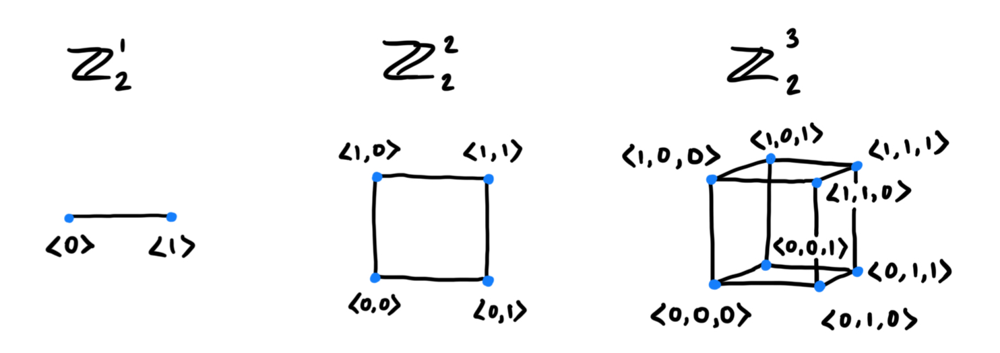
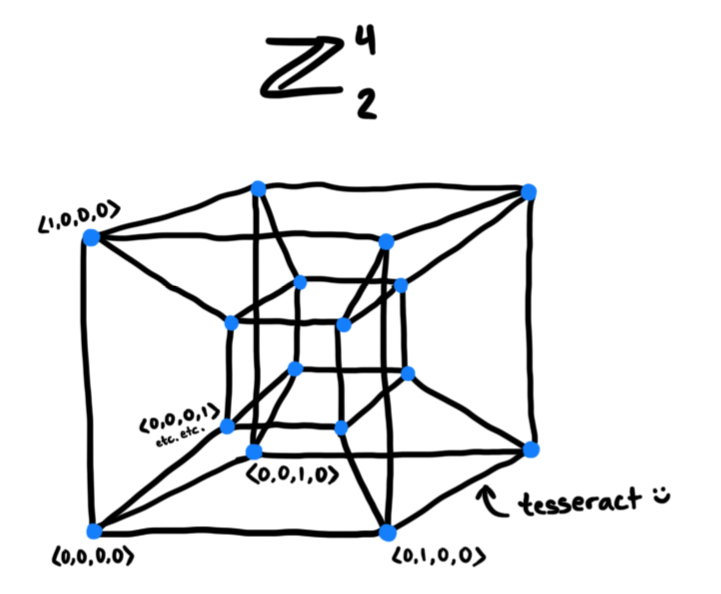
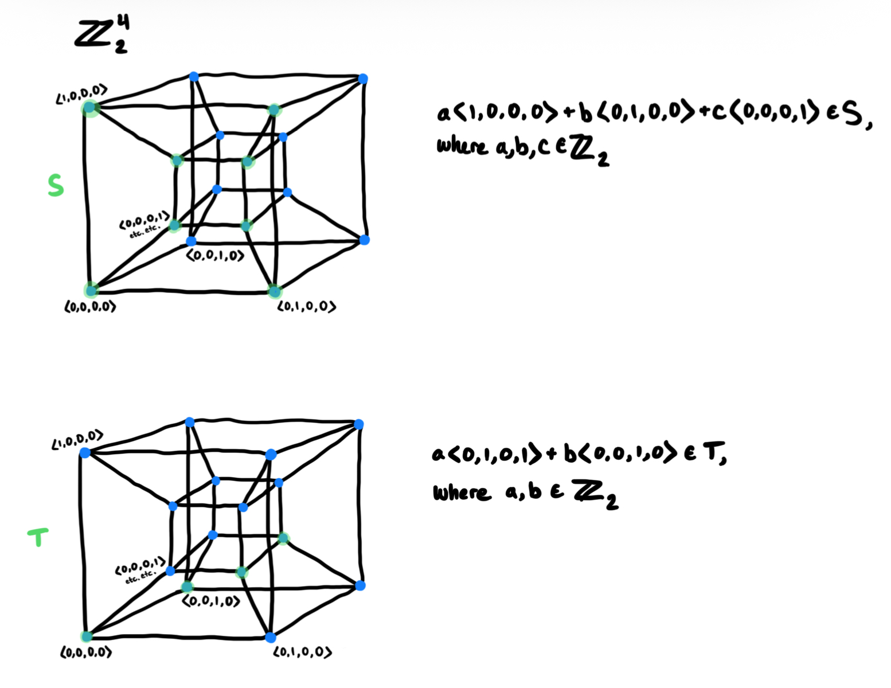
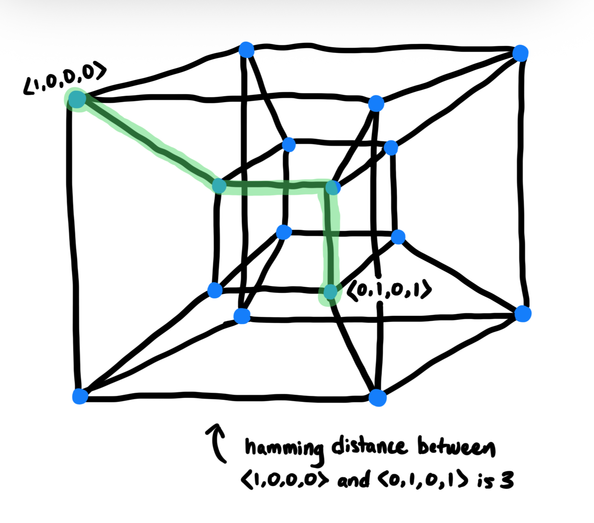

recently, instead of studying for upcoming midterms, i've been drawing vector spaces - specifically vector spaces in $\mathbb{Z}_2$. so here's a very informal post about it.
when used for physics, vectors are drawn as arrows on the cartesian plane, and are typically within the vector spaces $\mathbb{Z}^2$ or $\mathbb{Z}^3$. but i'd rather think about (and draw) vectors used for hamming codes.

things get a bit difficult to visualize after 3 dimensions, so i've only extended this representation to a 4d cube (tesseract).

similarly, subspaces of $\mathbb{Z}_2^2$ or $\mathbb{Z}_2^3$ or $\mathbb{Z}_2^4$ can be drawn. the most interesting ones are in $\mathbb{Z}_2^4$.

you can also draw paths between the vectors, and the length of those would represent the hamming distance (if you're thinking of the vectors as a binary string, that is).

yeah, anyway, that's it.